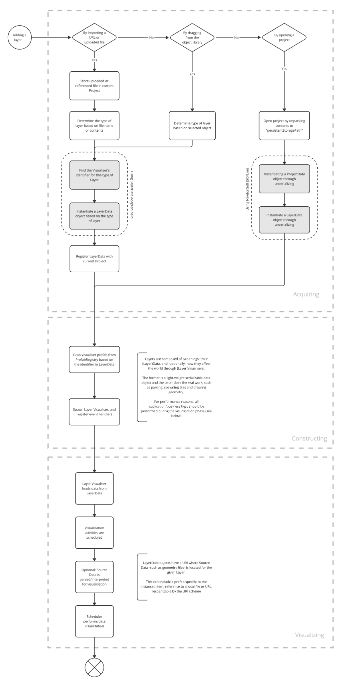

Projects
Overview
Netherlands3D is a dynamic platform designed to allow users to interact with 3D geographical maps of locations across the Netherlands. This platform enables a wide array of spatial data interactions, from visualizing sensor telemetry to managing infrastructure data like cables, pipes, and zoning information. At the core of this functionality is the concept of Projects, which serve as containers for all user interactions and data on the platform.
Projects in Netherlands3D encompass everything from the base map to the specific data layers, styles, and configurations that define the user's current view. Users can save these projects as snapshots of their work, allowing them to revisit, share, or continue working seamlessly at any time. This structure not only facilitates complex data analysis but also ensures that all spatial relationships are preserved and accurately represented.
Project File Format
Before diving into the technical specifics of how projects operate within the system, it's essential to understand the file format used to store project data. The project file acts as a blueprint, capturing all the layers, styles, configurations, and settings that define the project.
Todo
Describe the file format
System Operation Overview
Netherlands3D operates on a robust system that initializes with a default project file^1. This default project acts as the foundation upon which all subsequent user interactions and loaded projects are based.
Included Empty Project
Upon startup, the system loads an empty project file^1 from the Assets^2 folder. This project serves as the initial state of the application, providing a base map and predefined configurations that set the scene for the user's interaction. The empty project is crucial for ensuring that the application is ready to use immediately upon launch, without requiring any user input.
Customizable Default Project
A default project is fully configurable per deployment, allowing providers to tailor the initial view and settings to their specific needs. For instance, a province or municipality might want to highlight a particular region or set specific visualization parameters to align with their objectives. This flexibility ensures that the application can be used in various contexts, whether as an interactive tool for end-users or a static viewer for presenting a digital twin of a specific location.
Todo
Describe how this can be done
Project Loading and Replacement
Once the application is running, users can load their own project files. When a new project file is loaded, it replaces the current project in its entirety, bringing in all new data layers, styles, and configurations. This process ensures a smooth transition between different datasets and views, allowing users to focus on their work without worrying about residual configurations from previous projects.
Todo
Describe how this works in more detail with a flowchart illustrating the overall process
How Layers Work
Self-registering layers
A variant of the described flow exists where by adding the visualisation of a layer it self-registers the layer's data onto the current project. This flow will be described in a separate chapter for clarity.

The diagram provided illustrates the lifecycle of layers within a project, detailing how they are acquired, constructed, and visualized. Here's a breakdown:
Acquiring Layers
Layers in Netherlands3D can be added to a project in several ways:
-
Importing via URL or File Upload: The system allows users to import data layers by providing a URL or uploading a file. The uploaded or referenced file is stored within the current project, and the system determines the layer type based on the file name or its contents.
-
Dragging from Object Library: Users can also add layers by dragging objects from a pre-existing object library. The system determines the type of layer based on the selected object.
- Opening a Project: When a project is opened, the system unpacks its contents to a predefined storage path. This process involves instantiating a ProjectData object and associated LayerData objects through deserialization.
Constructing Layers
Once a layer is added, the system begins constructing it:
- The system finds a visualizer identifier for the specific layer type and then instantiates a LayerData object accordingly.
- The LayerData is then registered with the current project, linking it to the broader project context.
Layers consist of two primary components:
- Layer Data: This is a lightweight, serializable data object containing information about the layer, such as its source data location (e.g., file paths, URIs).
- Layer Visualizer: This component handles the actual visualization work, such as spawning tiles and rendering geometry.
Visualizing Layers
The final stage is visualizing the layers within the application:
- The system grabs the appropriate visualizer prefab based on the identifier in LayerData.
- The visualizer loads the data from LayerData, and the application schedules visualization activities.
- If necessary, the source data is parsed or interpreted before visualization, ensuring that all data layers are accurately represented.
- Finally, the visualization scheduler renders the data, allowing users to interact with the newly loaded layers seamlessly.
This structured approach to handling layers ensures that all data is properly managed, visualized, and integrated within the project framework, offering a powerful tool for spatial analysis and geographic data management in the Netherlands3D platform.